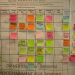

It’s time to really buckle down and get this dissertation going.
I read “The Clockwork Muse” by Eviatar Zerubavel to give me some ideas on how to accomplish the monumental task of writing a dissertation. In a nutshell, the trick is small pieces, planned times, and deadlines. In more detail, here are some notes that I took away from this book and have implemented in my pacing guide to dissertation completion.
Schedule: Schedule specific times to write, specific hours and days each week. Look at your week, plot out all of your existing commitments, family, work, etc. and schedule writing time into the available spots. Scheduling the time gives it reality, fits it in with your already planned life, and gives it boundaries. The book suggests figuring out how long of a session works for you, and keeping your writing times limited to that. I shouldn’t have any problem, because I can only get a few hours in a day anyways. I have a family (a wonderful wife and five amazing children who want to see their husband and dad some time during the week), a full-time job, Church responsibilities, and personal health needs. That gives me about three hours on three days a week. Making some changes during the summer, I should be able to bump that up to five hours on those three days a week. Plan for known vacations, trips, and other blocks of days where you know you will not be able to write. I figured that I will have three days a week to write, but I still have a lot of research to do, so I bumped that down to two days of writing and one day of research.
{kind=link}
Bits and Pieces: Another tip is to divide the dissertation up into as small of parts as possible. This does several things. First it is psychologically a lot easier to think about focusing on writing 5, 10 or 20 pages of a section or chapter, than it is to think about writing a 300 page dissertation. I already had an outline during the prospectus writing phase. That has certainly changed already (due to the need to focus on one tunnel instead of all of them), and will change again as I learn more about the topic. To help with a very basic outline, I looked at several similar works and based my outline on their table of contents. Here is what I have so far:
{kind=link}
- Introduction: Historiography, methodology, and arguments
- Chapter 1: Business Above Ground (193x-1944)
- Chapter 2: Decision to Disperse
- Chapter 3: Organization of Project X
- Chapter 4: Tunnel Technology and Topology
- Chapter 5: Collaboration with Killers
- Chapter 6: Persecuted and Perpetrators
- Conclusion: Meanings, Memories and Movements
That’s about it. I don’t know which tunnel, or which business I will study yet. Once that is clarified, I’ll be able to fill in the X’s and flush out the outline.
One other idea I liked about this section, is to not fall into the traditional trap of writing one chapter at a time. Zerubavel suggests, rather, to write as much as you can on all sections. That makes it that much easier when going through each revision, because you have something there already. Having a draft of the whole dissertation is much different, and far and away much better, than having a draft of only part of the dissertation, regardless of how “finished” the parts are. I’m going to give that a try.
Fail to plan? Plan to Fail: This next part was great in helping me visualize and actually help me believe that this project is actually achievable. With my end date in mind (December 2014, which will give me buffer time and time for revisions for a April 2015 defense and May 2015 graduation date), I figured out a rough estimate of pages needed, how days I will work, how many hours per day, and therefore how many hours available to write the dissertation. Dividing the pages by the hours gives me how many pages an hour I need to write, and a rough estimate of how many pages a day and week I will need to write. I gave myself a whole month of no writing for this year and next for buffer and reality. July of this year is all research, and I’m sure something will come up next year. Here’s what I came up with:
MONTHS
- 20 months of work (until December 2014, should have first draft all done, and getting revisions for second draft in January-February 2015, third draft in March-April 2015, submit final in April, defend in May 2015)
DAYS
- 240 days
- 12 days/month to work on dissertation
HOURS
- 804 hours total to work on dissertation until December 2014.
- A) 3 hours/day to work on dissertation, until June 2013 = 144 hours, March-June 2013 (Monday, Thursday, Friday 5pm-8pm)
- B) 5 hours/day if I don’t teach seminary = 660 hours, August 2013 – December 2014 (Monday, Thursday, Friday 5am-7am, 5pm-8pm)
PAGES
- 300 pages, goal to write that many pages
- 0.4 pages/hour
- A) 1.5 pages/day, 2 days/week, March-June 2013, 12 pages/month
- B) 2.5 pages/day, 2 days/week, August 2013 – December 2014, 20 pages/month
- 6 chapters (not including intro and conclusion)
- 40 pages/chapter (Intro and conclusion 30 pages each)
Next, I mapped out each day on a monthly calendar (March 2013 until May 2015) with my goals and a place to write my actual progress for the day, like so:
{kind=link}
This gives me a tangible, and handy chart to mark of progress, keep myself in line, and give something to others so they can see how I have allotted my time.
The author also suggests making up incentives for accomplishing certain milestones. I have not got to that point yet, but I know what the prize is for finishing the dissertation… a cruise!
Make It So: It’s easy for Captain Picard to get things done, he just says, “Make it so” and people do their jobs and get it done. Well, I’m the captain of this ship, and I say, “Make it so.” Some final tips to get writing are to write out a very rough, very temporary first draft of the whole dissertation. That way, when you get to focus on a specific section, I’m not looking at a blank page, but rather have something to massage, improve upon, and form.
{kind=link}
Also, I want to make the transitions from day to day as smooth as possible. Zerubavel suggests taking a few minutes at the end of each writing session to prepare for the next. That way the time wasting and destructive self-critiquing of the previous sessions work is avoided. Some suggestions are to edit the latest draft of the up coming couple of pages, gather materials, sources, ideas for the next session.
Finally, it all boils down to discipline and flexibility. Making a plan, sticking to it, but being flexible enough to adapt to unforeseen issues.
Notes:
All images from http://commons.wikimedia.org/
[zotpress author=”Zerubavel” style=”chicago-fullnote-bibliography” sortby=”default” sort=”DESC”]
One comment
Comments are closed.